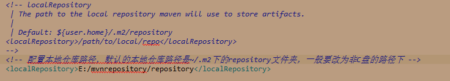
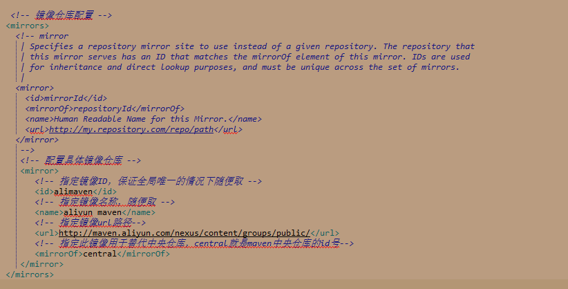

在settings.xml文件中配置本地仓库路径

在settings.xml文件中配置镜像仓库
这里以配置阿里云提供的镜像http://maven.aliyun.com/nexus/content/groups/public为例
使用镜像主要是为了解决在国外的maven中央仓库下载资源比较慢的问题，所谓镜像，就是国内的一些企业搭建的maven中央仓库的一个备份，几乎完全等同于maven中央仓库。国内做的比较好的镜像服务器就是阿里云服务器的镜像了
在用户级别的settings.xml文件中进行如下配置：

可复制粘贴的版本
<mirror>
<id>alimaven</id>
<name>aliyun maven</name>
<mirrorOf>central</mirrorOf>
<!--阿里云的镜像貌似在2018-8-1换了新的，参考https://yq.aliyun.com/articles/621196?spm=a2c40.aliyun_maven_repo.0.0.dc983054Pt5iCD-->
<url>https://maven.aliyun.com/repository/public</url>
</mirror>